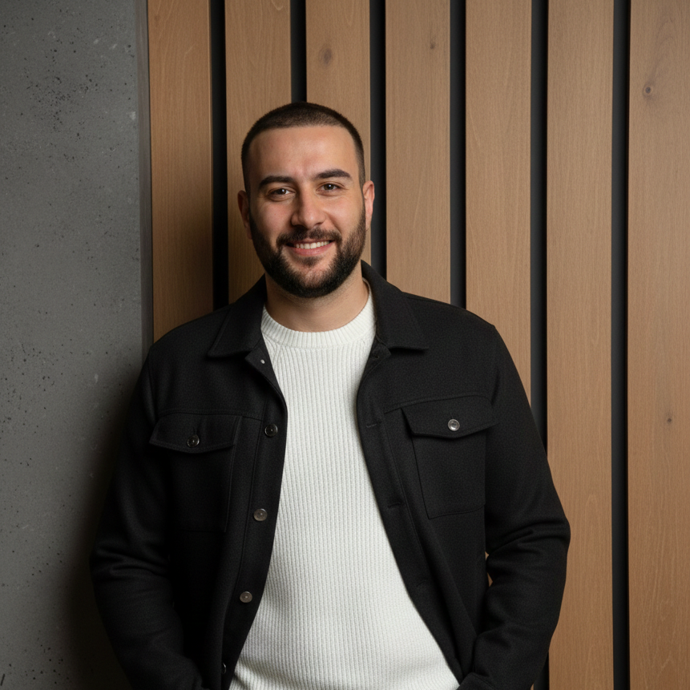

M. Emre Durmuş
Software Engineer · QA & Test Automation
A Software Testing Enthusiast with 7+ years of experience. I offer genuine participation in Software Development with roles of Quality Assurance, Scrum Master, Product Owner, and Test Automation Engineer — across high-pace, high-risk, and high-complexity projects in Sector Leader Holdings, Emerging Mid-Level Companies, and Start-ups.
Work History
Software QA Engineer
INSIDER ONE — İstanbul, Turkey
In the fast-paced world of SaaS, I approach Quality Assurance not as bug hunting, but as a key enabler of user experience, scalability, and reliable SaaS delivery.
- Designed and maintained scalable test automation frameworks using Python and JavaScript.
- Implemented UI test automation with Playwright and Selenium; Backend/API testing with Postman and Swagger.
- Integrated quality processes into Agile workflows and CI/CD pipelines using GitLab and Kubernetes.
- Contributed to AI/ML-driven products by aligning QA practices with modern LLMOps and MLOps principles.
Software Testing Engineer / Scrum Master
ZOVIZ — İstanbul, Turkey
Zoviz is an AI-powered branding product with 1M+ users and 5M+ traffic across Web and Mobile platforms.
- Served as Scrum Master for 6+ cross-functional teams, facilitating sprint ceremonies, backlog management, and continuous process improvements.
- Worked closely with Web and Mobile teams to support Agile delivery and software quality.
- Executed end-to-end software testing covering backend services, UI/UX, architecture flows, and usability.
- Performed manual, regression, system integration, and UAT testing.
- Conducted API testing using Postman; implemented test automation with Selenium (Python).
Freelancer Software Engineer
Self-employed — İstanbul, Turkey
Freelance consultant for Software Testing and Development for various clients in Machine Learning, Deep Learning, IoT, Web, and Mobile App projects.
- Business Analysis, Status Reports, Benchmarking Tests, Documentation, Literature Research.
- Test Automation and Data Modeling.
Senior Expert Software Test Engineer — Scrum Master
Beko Global (Arçelik) — İstanbul, Turkey
Beko Corporate is a global leader in consumer electronics, operating 20+ brands including Beko, Arçelik, Grundig, Hitachi, Whirlpool, Arctic, and Defy.
- Served as Software Test Lead for Smart Home IoT R&D projects, leading a 5-person QA team.
- Conducted exploratory testing, benchmarking, and root cause analysis.
- Created comprehensive test checklists and certification processes for Mobile, Cloud, and Embedded software across Arçelik smart home devices.
- Contributed to HomeWhiz Smart IoT Platform interoperability certifications, supported by TÜBİTAK.
- Led software validation for 40+ IoT devices, 500+ iOS/Android UI screens, and end-to-end cloud communication flows.
QA Test Engineer
Azerion — İstanbul, Turkey
- Contributed to testing and delivery of 100+ web-based casual games.
- Performed QA activities for 10 mobile Unity games (Stratego, Pet Paradise, Strike Force Kitty, etc.).
- Executed manual, regression, usability, and UAT testing across Web and Mobile platforms.
- Applied Agile and Scrum practices, supporting sprint execution and continuous quality improvement.
Software Testing Coordinator — Test Lead
Açık Yazılım Ağı (AYA) — İstanbul, Turkey
Volunteering on Test Team Foundation — hiring, organization, coordination, issue tracking, test process and SDLC design for 15 Mobile and Web App projects with a 200+ QA engineers team.
Applications under afet.org — helping thousands affected by tragic earthquakes.
Electronic Team Member
AE2 Project YTU — İstanbul, Turkey
- IoT Telemetric System Design for Alternative Energized Racing Vehicle of YTU AE2 Student Club.
- Used Embedded technologies, C, and Linux for sensors.
- Helped the team win the Shell Eco Marathon 2019 Global Safety Award.
Skills
Languages
Certifications
- Agile Principals 101 — Scrum Inc.
- Scrum Master Certificate — ACM Agile
- Object Oriented Programming with Java — Bilge Adam Academy
- C++ and OOP — C and System Developers Organisation
- Creative Writing — Boğaziçi University (BUMED)
Hobbies
A devotion to reading mostly everything and having an understanding about life attentioned in detail. Deep interest in literature for both reading and writing.
Music is my meditation and motivation. Always enjoying discovering new records and creating music in a mini studio.
Deeply interested in sports since birth. Played basketball in TBF junior leagues and CBL basketball league.
Love playing video games, especially Strategy and Open World games.
Education
Master of Science — Communication Engineering
Yıldız Technical University, Istanbul
- Interests: Artificial Intelligence, Deep Learning, Data Mining, Behavioral Biometrics.
- Course stage completed with 3.00 GPA.
Bachelor of Science — Electronics and Communication Engineering
Yıldız Technical University, Istanbul
- Thesis: Several Antenna Designs and Research of the Impact for SAR Values and Radiation over Body.
- Project: Telemetric System Design for Vehicle Support.